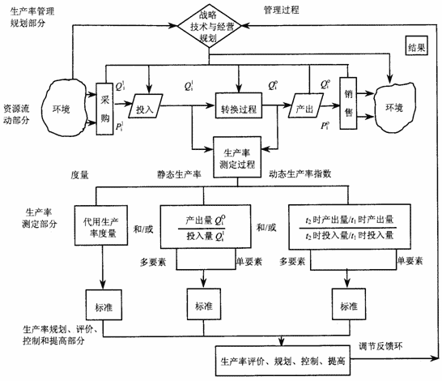
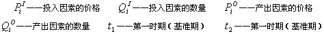

生产率管理模型
图3-4是生产率管理过程模型，我们可以利用这个模型对提高生产率过程进行分析。


图3-4 生产率管理过程模型
生产率管理过程模型包括以下几个基本组成部分：
(1)对生产率的测定和评价；
(2)根据测定和评价所提供的信息，对生产率的控制和提高作出规划；
(3)生产率控制和提高的调节反馈；
(4)对这些调节作用所产生的效果进行测定和评价，进入新一轮的测定、评价、规划、控制和提高的循环。
从生产率管理过程模型
可以看出，生产率管理过程是一个以提高生产率为目标，以生产率测定和评价为手段，对生产系统进行能动地控制的过程。由于生产率的提高是一个永无止境的目标，所以，生产率管理成为促进工业工程的应用和发展，不断提高生产系统水平的积极动力。